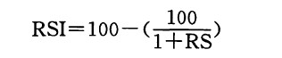

RSI的计算方法是，首先分别累加出一定时间之内上涨的价格幅度之和与下跌的价格幅度之和，然后再求得两者的比值。在计算过程中，一般仅采用收市价作为价格数据。它的计算公式是：

其中，RS=该时期上涨价格幅度的平均值／该时期内下跌价格幅度的平均值。
因此，当我们计算14天的RSI的时候，首先将这14天内上涨了的收市价的上涨幅度相加（按照收市价对收市价的方式），再将所得的和除以14。然后，对其中下跌的日子进行同样的计算。从这两个数值就得到了相对力度的值RS。最后，我们把RS的值代入到RSI的公式中去。RSI公式将RS的值转化为指数形式，并且使得该指数的取值范围在0到100之间。
copyright @ 2018 制作：汉钛电线，Hingtak Wire & Cable LLC